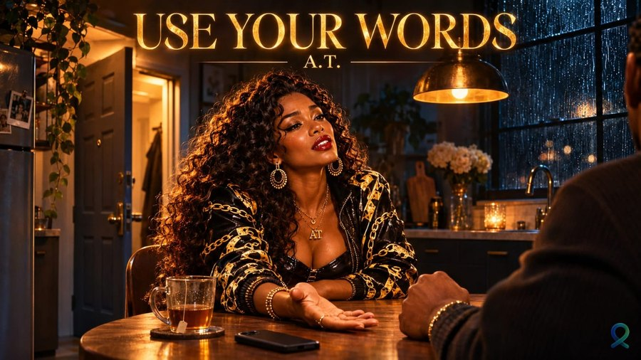

Track 03 · Heart On Pause
Use Your Words
When the words run out and your hands want to speak instead, A.T. pulls up a chair and talks to you like a friend. Feelings come and go like the tide, so don't make a permanent choice for a temporary reason. Say your piece, walk away if you need to, and let it cool. Love don't seek to hurt. It looks for even ground.
 Watch the official video
Watch the official video
Lyrics
[Intro]
Hey... come sit with me a minute.
I'm not here to judge you. I just wanna talk.
[Verse 1]
I know that feeling when the words run out
And your chest gets tight and your hands wanna speak instead
I been in rooms where the air got heavy
Where love started sounding like a war in somebody's head
But listen, baby, that fire you're feeling
It's real, but it's passing, it's weather, not the season
Don't sign forever on a feeling that won't last the night
A permanent choice for a temporary reason
[Pre Chorus]
So breathe with me... slow it down
Say what you need to say, then let it settle down
[Chorus]
Use your words, not your hands
Say your piece and walk away if you can
Love don't seek to hurt, it's looking for balance
Use your words, use your words
Don't let one night take what took years to build
Put it down, let it go, let it heal
Love was never meant to leave a bruise
Use your words... I'm begging you
[Verse 2]
'Cause the moment that it turns physical, it's over
Even if you stay, something in that house won't feel safe
One of y'all starts flinching when the other one gets closer
And you can't love somebody through a door you had to brace
I'm not saying hold it in until you're breaking
Take a drive, take a walk, go and call a friend
Tell 'em "I need space," that ain't weakness, that's wisdom
Walking out to cool off don't mean it's the end
[Pre Chorus]
So breathe with me... slow it down
Say what you need to say, then let it settle down
[Chorus]
Use your words, not your hands
Say your piece and walk away if you can
Love don't seek to hurt, it's looking for balance
Use your words, use your words
Don't let one night take what took years to build
Put it down, let it go, let it heal
Love was never meant to leave a bruise
Use your words... I'm begging you
[Bridge]
Feelings come and go like the tide
You'll see it different in the morning light
Love don't keep score with a closed fist
Love looks for even ground... equilibrium
And if you can't find it tonight
Just walk away, and come back when you're right
[Final Chorus]
Use your words, not your hands
Say your piece and walk away if you can
Love don't seek to hurt, it's looking for balance
Use your words, use your words
Don't let one night take what took years to build
Put it down, let it go, let it heal
Love was never meant to leave a bruise
Use your words... I'm begging you
[Outro]
You still with me? Good.
Next time it gets heated... remember this song.
Say your piece. Then walk away.
'Cause love... love seeks peace.
Written by Grey Beard and A.T. ℗ & © 2026 Threadia AI, Inc. All rights reserved.